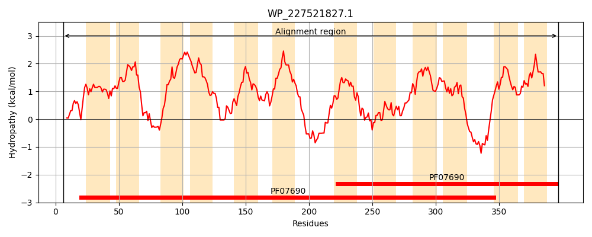
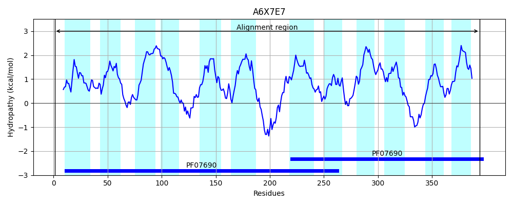
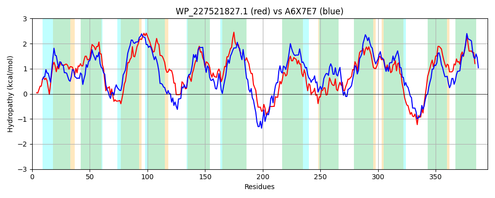

Hit Accession: A6X7E7
Hit TCID: 2.A.1.81.5
Hit Description: gnl|BL_ORD_ID|663 gnl|TC-DB|A6X7E7|2.A.1.81.5 Riboflavin transporter RfnT OS=Ochrobactrum anthropi (strain ATCC 49188 / DSM 6882 / JCM 21032 / NBRC 15819 / NCTC 12168) GN=rfnT PE=1 SV=1
Mach Len: 395
e:0.000000
Query TMS Count : 12
Hit TMS Count: 12
TMS-Overlap Score: 10.150000
Predicted Substrates:CHEBI:8843;riboflavin
BLAST Alignment:
Score: 803 , Bit scores: 313 bits, E-value: 1.7e-104, Alignment length: 395, Percentage identity: 43
Query: 6 MLPLAVQNKNILRLAAAQALAGANSVVFYATGAIVGNAIAPSPSLATLPITLFVLGMAASILPFGALARTRGRKAAFRLGTGAGMVTGLAAALAVVLNSFLLFCLAAMLGGAYAAVALSFRFAATDGVAPARRARALSLVMGGGVAAGIIGPMLVTGTMHLWPAHTFAVTFLAQALVAVLAA---FLLRGVTPAEPTATSVRGGRPLREIVRQPGFATTVFSGAVAYMVMNFLMTAAPLSMHMHGLSQQAANLGIQWHVMAMYGPGFFTGRLIQRFGAVRMAAAGLLITAASVAVGLSGLGVYHYWLSLILLGIGWNFGFTGASAKIIDFHRPEEKTQVQSLNDFLVFGVMIVGSFSSGVLLNAFGWNAVLWGSLVPVAVALLTLLLRPLSPSRA 397
M +NI+ L AQAL ++ + + G +VG ++ P+L TLP++LF LG+A LP R GR+ A+ LG G G+ AA + SFL+FCL + G YA+ S+RFAATD +ARA+S VM GG+ A I+GP LV T P FA +FL+QA++ +LA F+LR + GRPL EI+R P F +V +G +Y +M F+MTAAP++M HG S A LGIQWHV+AM+ P FFTG+LI RFG ++ A GL++ A S + L G V H+W +LI LGIGWNFGF GA+A + D H P E+ + Q NDF++FG + SF +G LL++ GW + W VA+ L+ L+LR L P A
Sbjct: 1 MTDATAARRNIVILTIAQALGASSPPIVISLGGLVGQKLSSDPALVTLPVSLFNLGLALGTLPAAFFMRQFGRRNAYMLGALVGAAAGVIAAAGIFAASFLIFCLGTLTAGFYASYVQSYRFAATDAATGDMKARAISWVMVGGLVAAIVGPQLVIWTRDTIPDAMFAGSFLSQAVLGLLALPVLFMLRAPKVRKDPNAIHDTGRPLGEILRSPRFILSVAAGVCSYALMTFVMTAAPIAMVGHGHSVDHAALGIQWHVLAMFAPSFFTGKLITRFGKEKITALGLVLIAFSAIIALGGFDVGHFWGALIFLGIGWNFGFIGATAMVTDCHTPAERGKAQGANDFIMFGTVACASFFAGSLLHSSGWETINWLVFPIVALVLVPLILR-LKPKGA 394 | Protein Hydropathy Plots: |
|---|
|  |  |
Pairwise Alignment-Hydropathy Plot:
|
|---|
|  |